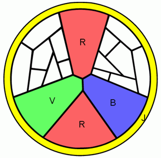
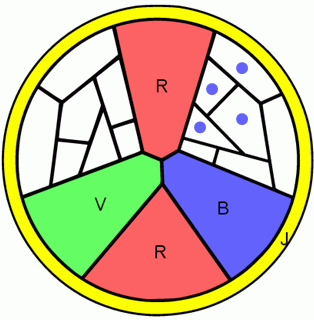
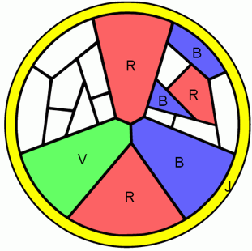
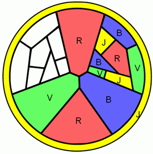
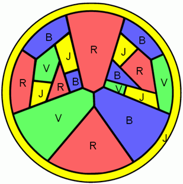

Castor souhaite peindre le grand vitrail de son salon de telle sorte que deux morceaux qui se touchent n'aient pas la même couleur. Aucun morceau ne doit rester blanc, y compris le contour.
Aidez Castor à trouver comment il pourrait peindre son vitrail. Cliquez sur un carré de couleur sur le côté, puis cliquez sur les morceaux que vous souhaitez colorier de cette couleur.
Il vous reste 19 morceaux à colorier.
|
Pour trouver rapidement une solution, on essaie de colorier en premier les zones qui sont les plus « contraintes », en coloriant d'abord les morceaux qui touchent le plus d'autres morceaux, ou alors en essayant d'utiliser les couleurs qu'on ne pourra pas facilement utiliser ailleurs. Et puis on essaye au maximum de ne pas remettre en cause les choix déjà faits.
|
On commence par colorier le morceau le plus contraint : le cercle du tour. Ensuite, les trois plus grand morceaux se touchant tous (au centre de la rosace) et touchant le cercle, il n'y a pas d'autres choix que d'utiliser les 3 couleurs restantes sur chacun. Le triangle du bas touchant trois couleurs (J, V, B), ne peut prendre que la quatrième (R). |
. Ensuite, on regarde la partie droite de ce qui reste. Elle est encadrée de rouge et de bleu qui touchent beaucoup des morceaux restants. Ce seront donc les couleurs les plus contraintes : on commence par elles. Pour le bleu, il y a 4 morceaux possibles. Au mieux, on peut en colorier 2 en bleu. |
|  |  |
|
Pour le rouge, il y a 3 morceaux possibles. Comme ils se touchent, il ne sera possible de ne colorier qu'un seul de ces 3 morceaux en rouge. |
On choisit donc de colorier 2 morceaux en bleu (il n'y a qu'une seule façon de faire), et 1 morceau en rouge (n'importe lequel des 3 possibles). |
|  | |
|
Il reste alors à colorier ce qui reste avec du jaune et du vert. On commence par le bord extérieur, qui ne doit pas être jaune, puis on complète en alternant les couleurs. |
On procéde de manière similaire pour l'autre partie, qui est symétrique. On gagne du temps en y appliquant le même raisonnement (mais pas avec les mêmes couleurs). On a alors tout colorié ! |
|  |  |
La stratégie consistant à se concentrer d'abord sur les parties les plus contraintes d'un problème est une technique classique en informatique, qui permet de réduire considérablement le nombre de configurations à essayer.
Le problème consistant à colorier des morceaux est un vieux problème, traditionellement posé sous la forme suivante : étant donnée une carte, combien de couleurs faut-il pour colorer cette carte pour que deux zones adjacentes ne soient pas de la même couleur?
Trois couleurs ne suffisent pas pour certaines cartes, comme le montre l'exemple du vitrail dans ce sujet, que l'on ne peut pas colorier avec seulement 3 couleurs. En 1852, Francis Guthrie, intéressé par la coloration de la carte des régions d'Angleterre, a émis l'hypothèse (la « conjecture ») que 4 couleurs suffisent à colorier n'importe quelle carte.
Plusieurs démonstrations fausses ont suivi. Des preuves ont ensuite été développées dans les années 70. Ces preuves étaient composées en partie de raisonnements mathématiques, et en partie du coloriage de millions de petites cartes à l'aide de programmes informatiques. Pendant longtemps s'est posée la question : est-ce que l'on peut vraiment faire confiance à un programme informatique pour faire une démonstration, étant donné que les programmes contiennent très souvent des « bugs » ?
Récemment, Georges Gonthier et Benjamin Werner ont re-prouvé le « théorème des 4 couleurs » en utilisant un logiciel, appelé Coq, qui permet notamment de prouver que le programme qui colorie les millions de petites cartes ne contient pas de bugs.